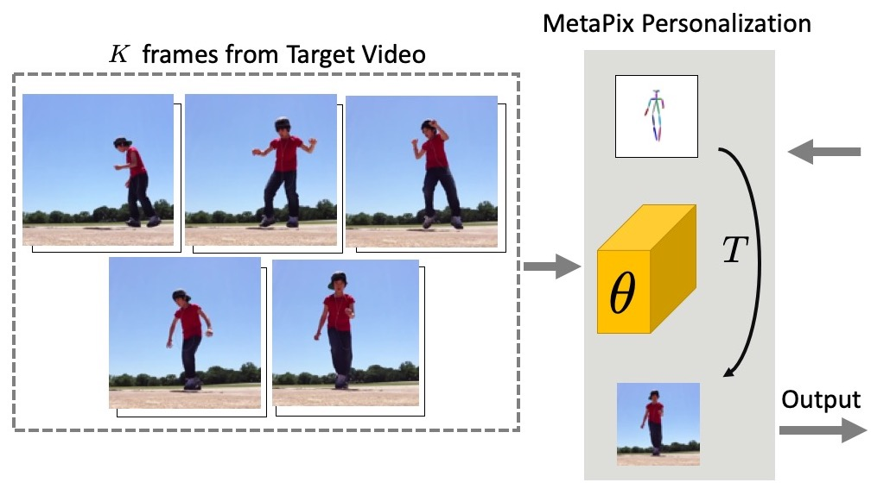
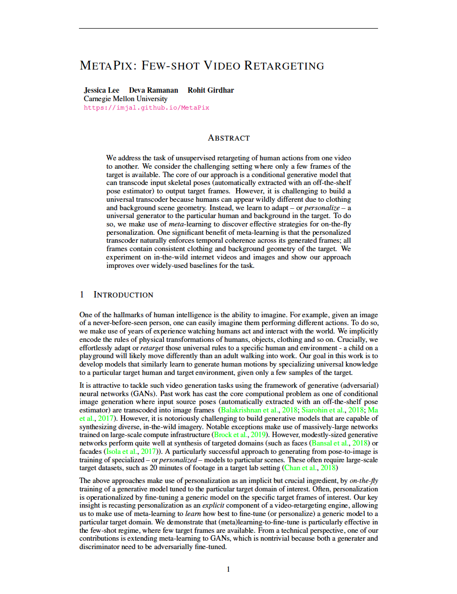

MetaPix: Few-Shot Video Retargeting


|
| We address the task of unsupervised retargeting of human actions from one video to another. We consider the challenging setting where only a few frames of the target is available. The core of our approach is a conditional generative model that can transcode input skeletal poses (automatically extracted with an off-the-shelf pose estimator) to output target frames. However, it is challenging to build a universal transcoder because humans can appear wildly different due to clothing and background scene geometry. Instead, we learn to adapt -- or personalize -- a universal generator to the particular human and background in the target. To do so, we make use of meta-learning to discover effective strategies for on-the-fly personalization. One significant benefit of meta-learning is that the personalized transcoder naturally enforces temporal coherence across not only its generated frames, but its initialization. All frames contain consistent clothing and background geometry of the target. We experiment on in-the-wild internet videos and images and show our approach improves over widely-used baselines for the task. |
People
|
Jessica Lee |
Deva Ramanan |
 Rohit Girdhar |
Paper
|  |
J. Lee, D. Ramanan, and R. Girdhar MetaPix: Few-Shot Video Retargeting MetaLearn Workshop, NeurIPS 2019, (oral, top 2 of 84 submissions) In Submission [arXiv] [Code] [Supplementary Video] [BibTex] |
Acknowledgements
This research is based upon work supported in part by NSF Grant 1618903, the Intel Science and Technology Center for Visual Cloud Systems (ISTC-VCS), and Google.